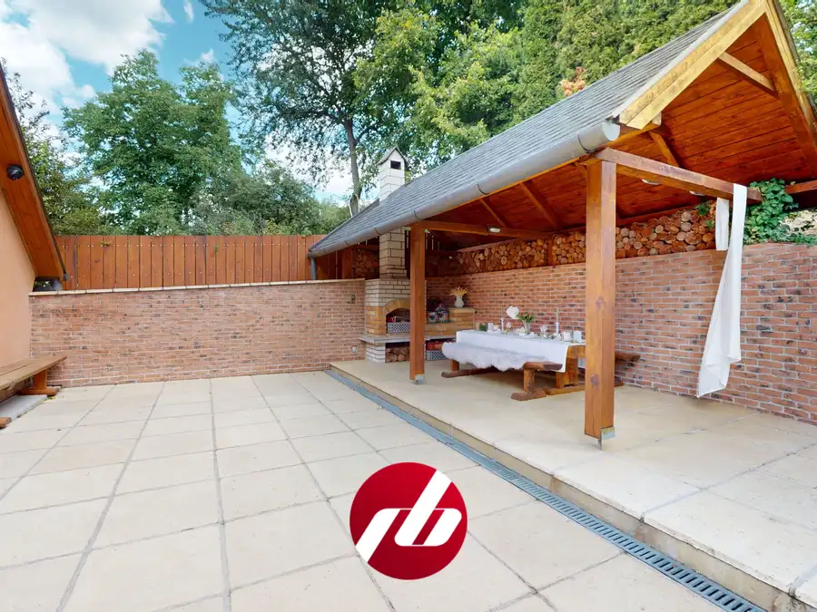
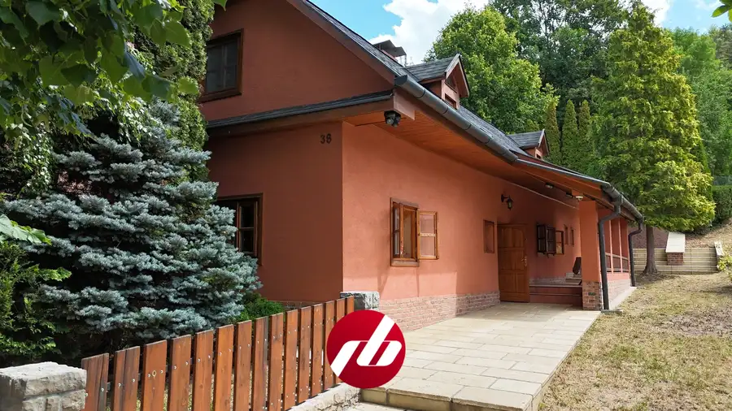
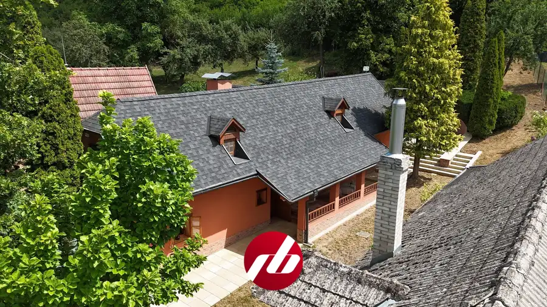
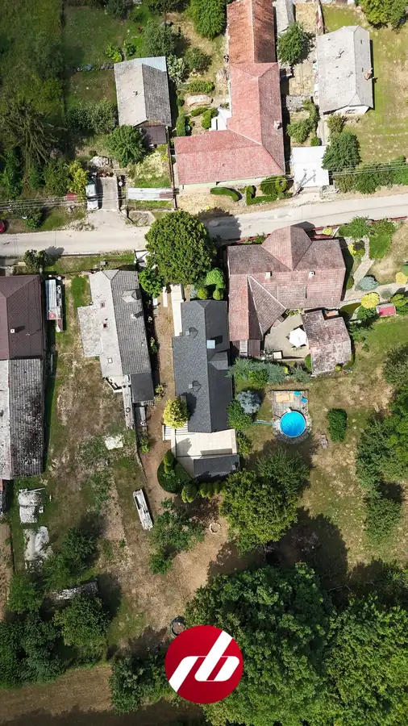
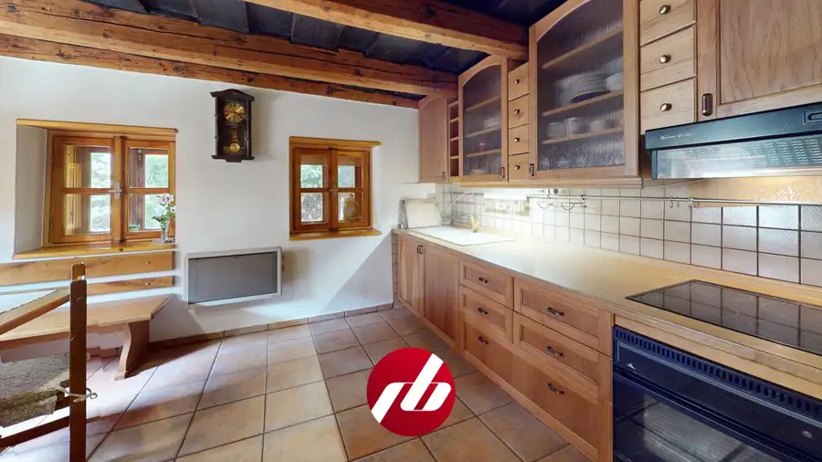
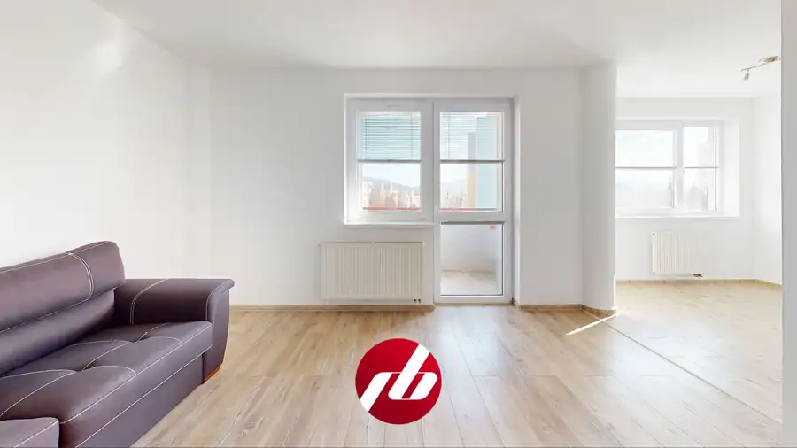
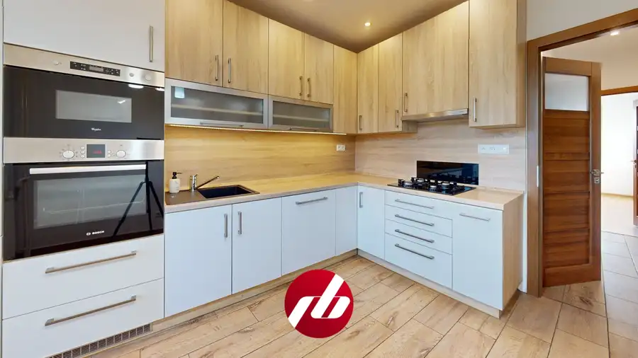
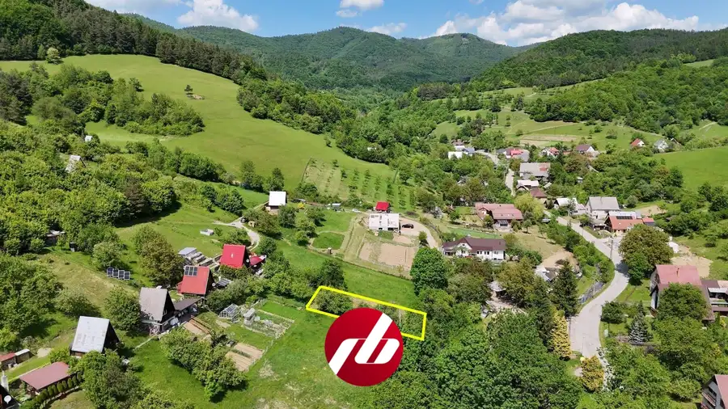

Zrekonštruovaná 4-izb. chalupa s altánkom a krbom, Hrachovište
Hrachovište





- Plocha128 m²
- StavKompletná rekonštrukcia
O nehnuteľnosti
Robustný drevený altánok, z dvoch strán uzavretý tehlovou stenou, s murovaným krbom a masívnymi drevenými stolmi a lavicami. Palivové drevo je uložené rovno pod jeho strechou, zásoba na rok dopredu. Dvor tejto chalupy v Hrachovišti je miesto, kde sa dá stráviť celý víkend bez toho, aby človek vôbec vošiel dnu.Dom pochádza podľa pamätníkov z tridsiatych rokov minulého storočia. Pôvodne to bola jedna obytná miestnosť s pecou na chlieb, čierna kuchyňa, komora a hospodárska kôlňa. V rokoch 1995 – 96 prešiel kompletnou prestavbou na celoročne obytnú chalupu: nová strešná konštrukcia aj krytina, obytné podkrovie, kuchyňa, kúpeľňa s WC, nová omietka, elektrina do celej stavby, obecná voda, chodníky a terasa zo zámkovej dlažby, obnovené kamenné a drevené ploty. V roku 2016 nasledovala druhá vlna: veľkoplošná dlažba na chodníkoch, schodoch a hornej terase, odtokový žľab, štruktúrovaná omietka s tehličkovým obkladom, repasované drevené prvky vrátane okien a altánku a nová strecha z kvalitnej nemeckej asfaltovej krytiny na dome aj altánku.Dispozične ide o klasickú chalupu so štyrmi izbami a úžitkovou plochou 128 m² na dvoch podlažiach. Na prízemí je predsieň so schodiskom, priestranná kuchyňa s pecou na chlieb, obývacia izba, špajza a kúpeľňa s toaletou. Drevené schody vedú do podkrovia s tromi izbami – hlavnou spálňou, menšou priechodzou, v ktorej sa tiež dá spať, a otvorenou izbou pri schodisku. Kúpeľňa je len na prízemí, čo je pri tomto type domu bežné a je dobré s tým rátať.Vnútri prevláda drevo a biela omietka. Strop v kuchyni je pôvodný a jeho tmavá farba pochádza ešte z čias, keď sa drevo proti škodcom ošetrovalo hovädzou krvou – aj podľa toho sa dá odhadnúť vek stavby. Pec na chlieb je zrekonštruovaná a funkčná. Podkrovie je celé v dreve, podlahy aj obložené steny, so šikmými stropmi, vikiermi a vstavaným nábytkom na mieru. Cez jednu zo spální prechádza biely murovaný komín, ktorý priestoru skôr pridáva, než by prekážal.Chalupa je pripravená na celoročné využitie. Hrubé kamenné múry držia v lete príjemnú teplotu aj bez klimatizácie, v zime kúri pec na drevo a doplnkovo elektrické konvektory. Teleso pece prechádza z prízemia až do podkrovia, takže vyhrieva obe podlažia naraz; v kuchyni, predsieni a kúpeľni je pod dlažbou elektrické podlahové kúrenie DEVI. Voda je z obecného vodovodu, ohrieva ju 150-litrový elektrický bojler. Odpad rieši žumpa s objemom cca 4 m³, obecná kanalizácia v Hrachovišti zatiaľ nie je. Plyn je v obci od roku 2006 a vedie v ceste priamo pred chalupou, takže napojenie je možné bez komplikácií. Zavedený je internet s rýchlosťou 100 Mbit, káblová televízia aj zabezpečovací systém s pohybovými snímačmi, vonkajšou kamerou a diaľkovým prístupom.Pozemok má 374 m² a práve sa rozširuje vysporiadavaním niektorých parciel. Po dokončení bude celková výmera približne 500 m². Medzi domom a altánkom je kompletne dláždený dvor z pieskovcovej dlažby, pozdĺž čelnej strany krytá veranda s drevenou balustrádou. Záhrada nie je len trávnik – vzrastlé tuje tvoria prirodzenú stenu, k nim sa pridávajú striebristé smreky, zlatistá tuja ako solitér a kvitnúce ovocné stromy. Zo zadnej, mierne vyvýšenej časti je výhľad na obec a okolité kopce. Časť trávnika je vlhkejšia, ideálna pre vlhkomilné rastliny. Parkuje sa priamo na dláždenej ploche pri vstupe.Chalupa sa predáva zariadená. Nábytok, väčšinou vyrobený na mieru, kuchynská linka so spotrebičmi, televízor aj postele zostávajú – majitelia si berú len osobné a nostalgické veci. Stačí prísť s kuframi.Hrachovište leží v podhorí Bielych Karpát v okrese Nové Mesto nad Váhom, na rozhraní kopaníc a vinohradníckeho podhoria. Piešťany sú na dosah – miestni cyklisti si sem jazdia po cyklotrasách – a z Bratislavy je to necelá hodina jazdy. Susedia sú z oboch strán pokojní ľudia.3D obhliadka: https://my.matterport.com/show/?m=qGmy1mkRGH5(link je potrebné označiť myšou, kopírovať Ctrl+C, vložiť Ctrl+V do adresového riadku prehliadača a stlačiť ENTER)Ak hľadáte novú nehnuteľnosť a zároveň potrebujete predať tú svoju, spýtajte sa nás nezáväzne za koľko ju od vás vieme okamžite odkúpiť:https://riesimebyvanie.sk/vymente-svoje-stare-byvanie/RIEŠIME BÝVANIE - realitná kancelária Martina Čaparealitný maklér - Mgr. Vladimír Gábor, 0903 618 307, gabor@riesimebyvanie.skViac info: https://riesimebyvanie.sk/makler/gabor/
Parametre
- Bezpečnosť
- Alarm, Kamerový systém
- Doprava
- Cyklistická infraštruktúra
- Druh
- Chalupa, rekreačný domček
- Dátum zverejnenia
- 30. 07. 2026
- Energetický certifikát budovy
- nie je
- Plocha pozemku
- 374 m²
- Podpivničenie
- Nedostupné
- Počet izieb / miestností
- 4
- Počet kúpeľní
- 1
- Počet nadzemných podlaží
- 2
- Počet spální
- 3
- Počet vonkajších parkovacích miest
- 2
- Príprava teplej vody
- El. akumulačný boiler
- Rok poslednej rekonštrukcie
- 2016
- Stav nehnuteľnosti
- Kompletná rekonštrukcia
- Terén pozemku
- Prevažne rovinatý
- Typ
- Predaj
- Typ konštrukcie
- Kamenná
- Vybavenie
- Terasa, Vonkajšie parkovacie miesto, Záhrada, Krb, Altánok / posedenie
- Vykurovanie
- Podlahové, Lokálne, Krb
- Zastavaná plocha
- 70 m²
- Zdroj tepla
- Kombinovaný
- Úžitková plocha
- 128 m²
Kde to je


Mohlo by Vás zaujímať

BytNové 132 000 €Svetlý 2-izbový byt s vlastným parkovaním oproti Južanke – Trenčín Trenčín 2-izbový42 m²4. podlažie
BytNové 148 000 €Slnečný 3-izbový byt s balkónom a výhľadom na kopce, Dubnica nad Váhom Dubnica nad Váhom 3-izbový68 m²4. podlažie
PozemokNové 9 000 €Pozemok na výstavbu chatky - Vydrná Vydrná 424 m²